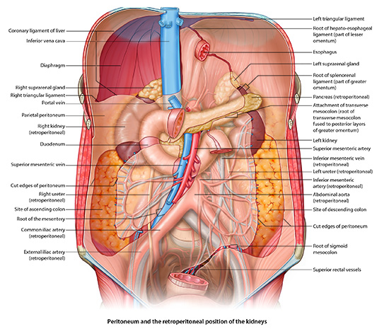

Stomach, Liver, Spleen: Module 1 - Page 5 of 5
Remember that the kidneys, duodenum and most of the pancreas are retroperitoneal.
What part of the pancreas is not retroperitoneal? |
|
|
The extreme end of the body of the pancreas, which is also known as the tail of the pancreas.  |
|